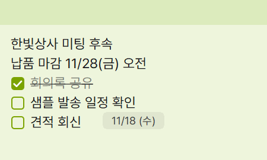
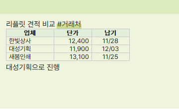
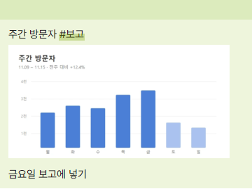
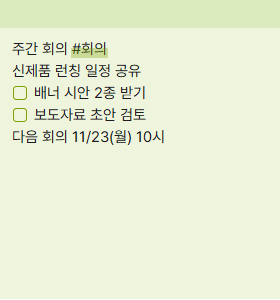
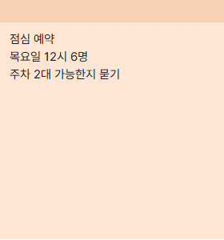
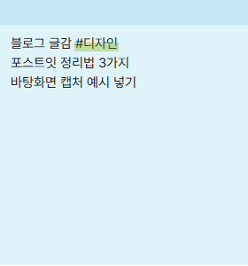
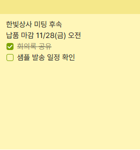
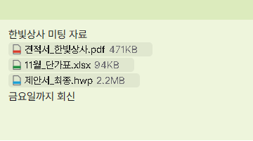
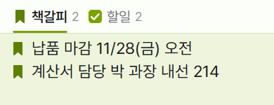

할일
줄 맨 앞에 []를 치고 스페이스. 마감일은 /날짜로 붙입니다.
Windows 데스크탑 메모
툴바도, 폴더도 없이 바로 씁니다. 필요한 기능은 /와 우클릭으로 그때만 꺼냅니다.
Windows 10·11 · 설치 안내
엑셀에서 보던 표, 방금 찍은 화면 캡처를 그대로 붙입니다. Ctrl+Alt+V를 누르면 복사해 둔 것이 바로 새 노트가 됩니다.


쓰다 보면 흩어지는 노트를 한 번에 줄 세웁니다. 크기도 같이 맞춥니다.




파일을 노트에 끌어다 놓으면 내 Google Drive에 올라가고, 노트에는 칩 하나로 남습니다.

Google 계정을 한 번 연결하면 회사 PC와 집 PC의 노트가 몇 분 안에 맞춰집니다.
TidyNotes 폴더에만 저장
줄 맨 앞에 []를 치고 스페이스. 마감일은 /날짜로 붙입니다.

줄 맨 앞에 ! 스페이스. 늘 봐야 할 줄을 바탕화면 보드에 띄워 둡니다.

본문에 #회의처럼 적으면 노트함(Ctrl+Alt+F)에서 그 노트만 모아 봅니다.
내려받기 폴더의 TidyNotes-setup.exe를 엽니다.
“알 수 없는 게시자”라고 나옵니다. 아직 코드 서명 인증서가 없어서 뜨는 Windows 기본 경고입니다.
새 버전이 나오면 받아 두었다가 다음에 앱을 켤 때 설치합니다. 설정 → 버전에서 끌 수 있습니다.
TidyNotes 폴더 하나만 열 수 있게 Google이 막아 둡니다. 다른 문서·사진은 목록조차 볼 수 없습니다.